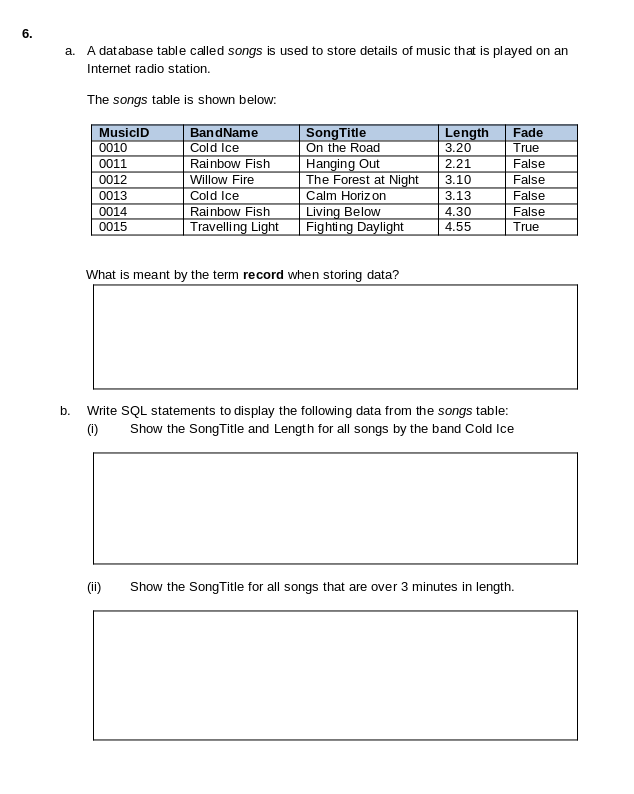
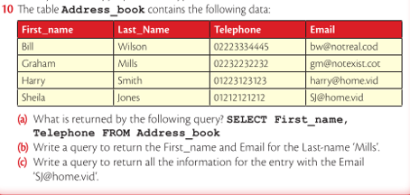
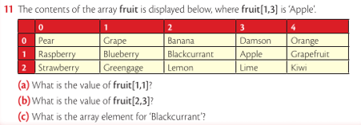

Press s for speaker notes
array students[4] students[0] = "Jim" students[1] = "Pam" students[2] = "Jeff" students[3] = 1 # will raise an error students[4] = "Sally" # will cause an error
array staff[3, 4] staff[0, 0] = "Jim" # name staff[0, 1] = "Receptionist" # role staff[0, 2] = "1/02/2002" # Join date staff[1, 0] = "Pam" staff[1, 1] = "Manager" staff[1, 2] = '1/03/2001'
Staff table
| fname | staffRole | startdate |
|---|---|---|
| “Jim” | “Receptionist” | “1/02/2002” |
| “Pam” | “Manager” | “1/03/2001” |
SELECT fname, staff_role, start_date FROM staff_table;
| fname | staffRole | startdate |
|---|---|---|
| “Jim” | “Receptionist” | “1/02/2002” |
| “Pam” | “Manager” | “1/03/2001” |
* fieldSELECT * FROM staff_table
| fname | staffRole | startdate |
|---|---|---|
| “Jim” | “Receptionist” | “1/02/2002” |
| “Pam” | “Manager” | “1/03/2001” |
SELECT fname, staff_role FROM staff_table WHERE fname = "Pam"
| fname | staffRole |
|---|---|
| “Pam” | “Manager” |


